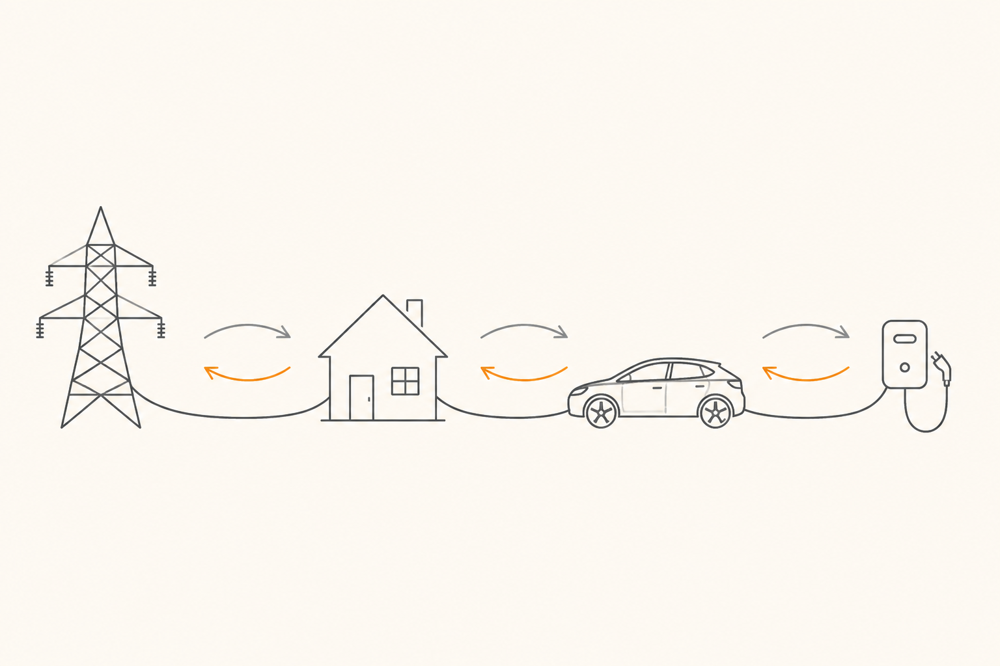

Futuro extendido: V2G/V2H y megawatt charging
Hasta ahora hemos hablado del coche como un consumidor de energía: la batería se llena, el coche la usa, vuelves a casa, vuelves a llenar. La frontera siguiente cambia ese rol. Un coche eléctrico tiene una batería tan grande que pensar en ella solo como "depósito del propio coche" empieza a desperdiciar potencial. Las dos grandes apuestas del horizonte: que el coche devuelva energía al ecosistema (V2G/V2H) y que cuando cargue, lo haga a velocidades que hoy parecen ciencia ficción (megawatt charging).
Bidireccionalidad: el coche que devuelve energía
Hasta ahora, la electricidad ha viajado siempre en un solo sentido: de la red al coche. La carga bidireccional rompe esa unidireccionalidad. El coche no solo recibe: también puede entregar. Tres siglas describen casos de uso distintos del mismo principio físico:
V2L (Vehicle-to-Load). El más sencillo: el coche alimenta directamente un aparato eléctrico que enchufas a un toma del propio coche. Útil para una nevera de camping, herramientas eléctricas en una obra, café para una caravana. Ya está disponible en bastantes coches actuales y la integración es relativamente simple.
V2H (Vehicle-to-Home). El coche alimenta tu casa. Si hay un apagón, el coche se convierte en generador de emergencia. Si la electricidad de la red está cara (por ejemplo, en horario punta), tu casa puede consumir del coche en lugar de la red, y este se recarga cuando la electricidad esté barata (madrugada). Una batería de coche típica (60-80 kWh) puede alimentar una casa media durante varios días.
V2G (Vehicle-to-Grid). El paso final: el coche devuelve energía a la red eléctrica, no solo a tu casa. La compañía eléctrica te paga por esa energía cuando la necesita (por ejemplo, en picos de demanda). Tu coche se vuelve un nodo activo del sistema eléctrico nacional, no solo un consumidor.

Por qué todo esto importa para la red
La red eléctrica tiene un problema: la generación renovable (solar y eólica) es intermitente. Hay momentos del día en que se produce más electricidad de la que se consume (mediodía soleado), y otros en los que ocurre lo contrario (noche sin viento, picos de consumo). Para amortiguar esos vaivenes, hace falta almacenamiento.
Si cada coche eléctrico aparcado fuera una batería conectada a la red, el problema cambia de naturaleza. Imagina diez millones de coches eléctricos aparcados en una ciudad. Si todos tienen 60 kWh, eso son 600 000 MWh de almacenamiento distribuido — una capacidad descomunal, mucho mayor que la de cualquier planta de baterías estacionarias. Aprovechar solo una fracción permitiría a la red gestionar las renovables de forma muchísimo más estable.
Esa es la promesa estructural de V2G. Es la razón por la que reguladores, eléctricas y fabricantes están alineados, aunque los detalles técnicos y económicos aún se estén cocinando.
Lo que falta para que sea normal
Tres frentes están casi listos, uno todavía no:
Coche. Cada vez más modelos modernos vienen preparados para carga bidireccional, especialmente con CCS Combo en su versión bidireccional. La electrónica está. Falta abrir la función desde el firmware.
Cargador / wallbox. Los cargadores bidireccionales existen ya y bajan de precio cada año. Su instalación es como la de un wallbox normal pero algo más cara.
Protocolos. ISO 15118 (la versión moderna de la norma de comunicación entre coche y cargador) ya soporta bidireccionalidad. La industria converge.
Marco regulatorio y comercial. Esto es lo que más cuelga. Para que V2G sea atractivo necesitas una tarifa eléctrica que premie correctamente la energía devuelta, contratos con la eléctrica que permitan la operación, y garantías para el conductor sobre cuánta vida útil pierde su batería al participar (porque sí: usar la batería para V2G suma ciclos y la envejece). Esos detalles regulatorios se están desarrollando país por país, y es lo que marca el ritmo real de adopción más allá de pilotos.
Una cosa importante: los coches con química LFP son especialmente buenos candidatos para V2G porque su química aguanta muchísimos más ciclos sin degradarse. Si tu coche es LFP, perder un poco de vida útil por participar en V2G compensa más fácil que si es NMC, donde cada ciclo cuenta más. Esto enlaza con lo que vimos en la píldora 3 y muestra cómo las decisiones químicas de hace cinco años están encajando con los casos de uso de los próximos cinco.
Megawatt Charging System (MCS)
El otro gran cambio del horizonte va en sentido opuesto pero relacionado: cargas aún más rápidas.
Hoy, los cargadores rápidos top entregan ~350 kW. Bastante para que un turismo cargue del 10 al 80% en 15-20 minutos. Pero hay un mundo donde esto no basta: el de los vehículos pesados eléctricos (camiones, autobuses interurbanos). Un camión eléctrico tiene una batería de 500-1000 kWh; cargarlo a 350 kW tarda dos o tres horas, lo que destruye su modelo logístico.
Para eso se está desarrollando el MCS (Megawatt Charging System): cargadores capaces de entregar 1 MW (1 000 kW) o incluso 3 MW. Con 1 MW, un camión carga lo que necesita para una jornada en menos de 30 minutos. Con 3 MW, en menos de 10.
¿Y qué tiene esto que ver con un turismo? Que la tecnología no se queda en el camión. Una vez que existen cargadores de 1 MW desplegados (especialmente en grandes corredores y áreas de servicio para flotas), los turismos de 800 V que puedan aceptar 500-700 kW empezarán a aparecer. Con esa velocidad, un coche se carga en 5-7 minutos. Es decir, lo que tarda repostar gasolina hoy.
Cuando esto se generalice, una de las objeciones clásicas al coche eléctrico (la "ansiedad de carga") se vuelve obsoleta. No será necesario planificar paradas: paras donde y cuando te apetezca, el coche carga lo que necesitas en lo que tardas en estirarte.
Lo que cierra el círculo
Si juntas las dos tendencias de esta píldora con todo lo que hemos visto, se forma una imagen coherente de hacia dónde va el sistema:
Las baterías mejoran (píldora 11): más densidad, más durabilidad, más opciones químicas. Los componentes mejoran (píldoras 6 y 10): SiC y 800 V hacen los coches más eficientes y permiten cargas más altas. La infraestructura mejora (esta píldora): MCS multiplica las velocidades, y V2G convierte cada coche en un nodo del sistema. Y todo lo gestiona electrónica cada vez más fina (píldora 4 y 7): BMS más inteligentes, inversores más precisos.
Lo que estás aprendiendo no son piezas sueltas. Es una transición sistémica donde el coche deja de ser un aparato aislado y se vuelve parte de la red eléctrica, casi un electrodoméstico móvil. Las decisiones de diseño que toma un fabricante hoy (química, voltaje, semiconductores, capacidad de bidireccionalidad) son las que definirán qué casos de uso podrá ofrecer mañana. Y las decisiones de los reguladores y de las eléctricas son las que definirán si esos casos de uso se adoptan o se quedan en pilotos perpetuos.
Has llegado al final del curso con suficiente vocabulario y estructura mental para leer ese debate con criterio. Ya no necesitas que nadie te lo cuente — ahora puedes seguir el partido tú solo.
FácilDistingue V2L, V2H y V2G en una frase cada una.
V2L: el coche alimenta directamente un aparato enchufado a él. V2H: el coche alimenta tu casa. V2G: el coche devuelve energía a la red eléctrica nacional, normalmente a cambio de un pago.
Fácil¿Para qué tipo de vehículo se está desarrollando primero el MCS (Megawatt Charging System)?
Para vehículos pesados, especialmente camiones eléctricos. Tienen baterías muy grandes (500-1 000 kWh) y necesitan cargas mucho más rápidas que los cargadores actuales para mantener viable su modelo logístico. La tecnología luego se filtrará a turismos.
Medio¿Por qué un coche con química LFP es buen candidato para V2G?
Porque participar en V2G suma ciclos a la batería: la cargas y la descargas más veces de las que harías solo conduciendo. Las celdas LFP aguantan muchos más ciclos (típicamente 3 000-6 000) que las NMC, así que el desgaste extra del V2G se nota mucho menos en la vida útil. En NMC, cada ciclo cuenta más, por lo que el cálculo coste-beneficio del V2G es más ajustado.
Difícil¿Por qué la masificación de V2G podría cambiar la economía de las energías renovables?
Porque las renovables (solar, eólica) son intermitentes: producen mucha electricidad cuando hay sol o viento, y poca cuando no. La red necesita almacenamiento masivo para amortiguar esos vaivenes. Si millones de coches eléctricos aparcados pueden funcionar como almacenamiento distribuido (cargando cuando sobra electricidad renovable y devolviéndola cuando falta), la red gana una capacidad enorme sin construir nuevas plantas de baterías estacionarias. Eso baja el coste sistémico de integrar renovables y vuelve más viable depender de ellas a gran escala. La pregunta no es si V2G es técnicamente posible (lo es), sino si los marcos regulatorios y las tarifas se diseñan para que sea económicamente atractivo a la vez para conductores y eléctricas.
Has recorrido los doce bloques del sistema de energía de un coche eléctrico, desde la celda química más pequeña hasta el papel que cada coche puede jugar en la red eléctrica del país. Ya tienes el mapa, los componentes, los traductores, los guardianes, las químicas y los horizontes.
Todo lo que leas a partir de ahora sobre coches eléctricos lo vas a entender mejor — fichas técnicas, noticias del sector, debates en foros, conversaciones de bar. Si quieres seguir profundizando, los temas que naturalmente vienen a continuación son: gestión de flotas eléctricas, modelos de negocio de la carga, reciclado y segunda vida de baterías, integración con la generación doméstica solar.
Buen viaje. Y si te queda alguna duda concreta de algo que hayas leído, vuelve a la píldora correspondiente: están todas pensadas para ser autónomas y poder consultarse de forma suelta cuando haga falta.